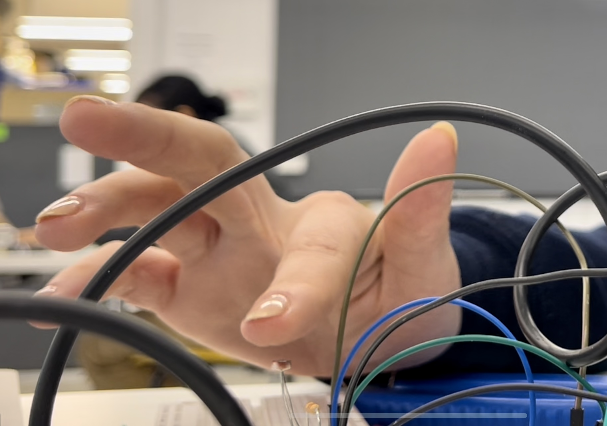

<style>
h3 {
color: DeepPink;
}
h2 {
color: DeepBlue;
text-align: center;
}
img {
display: block;
margin-left: auto;
margin-right: auto;
}
</style>
<div class="container-fluid">
### Week 7: Electronic Output Devices
<h2> Making a Light Theramin (the Theramini!)
</h2>
<p>
 <br>
Since this week's project was to utilise both input and output devices, I thought it would be a great opportunity to make something I've always wanted to have: a theramin. It's an instrument that adjusts pitch based on the distance of the player's hand from the sensor.
<br> <br>
Most of the tutorials I looked up used ultrasonic sensors to make the theramin. I couldn't immediately find those in the shop but thought that a photo resistor would be an easy substitute that would also be fairly effective!
<br> <br>
For this project I used a photoresistor, a 220 Ohm resistor, a piezo buzzer, and of course wires and my Arduino Uno!
<br> <br>
I put the circuit together as such: <br>
<img src="circuit.png" alt="my circuit" width="500"> <br> <br>
I also used instructions from this guide!
<br> <br>
Here is my code:
</p>
<pre>
<code>
int analogPin = A0; // Input from photoresistor connected to A0
int buzzerPin = 4; // Positive buzzer pin connected to pin 4
long max_frequency = 2500; // Max frequency for the buzzer
long frequency; // The frequency to buzz the buzzer
int readVal; // The input voltage read from photoresistor
void setup() {
Serial.begin(9600);
pinMode(buzzerPin, OUTPUT); // set a pin for buzzer output
}
void loop() {
readVal = analogRead(analogPin); // Reads 0-1023
frequency = (readVal * max_frequency) / 200;
buzz(buzzerPin, frequency, 2);
Serial.print(readVal);
Serial.print(",");
}
void buzz(int targetPin, long frequency, long length) {
long delayValue = 1000000/frequency/2;
long numCycles = frequency * length/ 1000;
for (long i=0; i < numCycles; i++) {
digitalWrite(targetPin,HIGH);
delayMicroseconds(delayValue);
digitalWrite(targetPin,LOW);
delayMicroseconds(delayValue);
}
}
</code>
</pre>
<p2>
When I loaded the code I initially had a problem where the buzzer wasn't changing pitch. Ibrahim helped diagnose the issue: first we went through the circuit, which was fine. (although the buzzer required some light wire repair) Next, we looked at the code. The initial code that I was using was not sensitive enough for the bright environment and the subtle changes in light from a finger. After making some edits we were able to make a crude 'theramin'
<video controls width="500">
<source src="fingie.mp4"
type="video/mp4">
Sorry, your browser doesn't support embedded videos.
</video>
<br> <br>
We also realised that the theramin was a lot more effective when exposed to a larger quantity of light. So using the phone flashlight I was able to achieve a wider range of pitches. <br> <br>
<video controls width="500">
<source src="phone.mp4"
type="video/mp4">
</video>